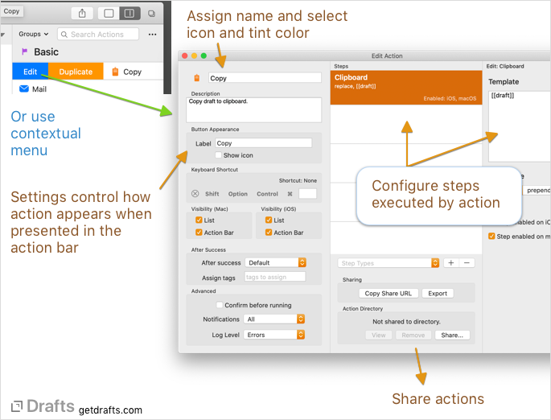
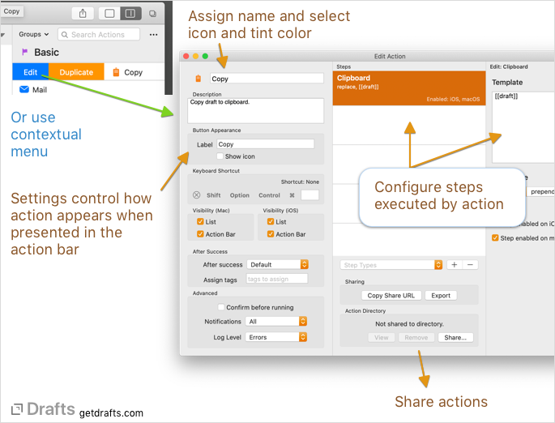
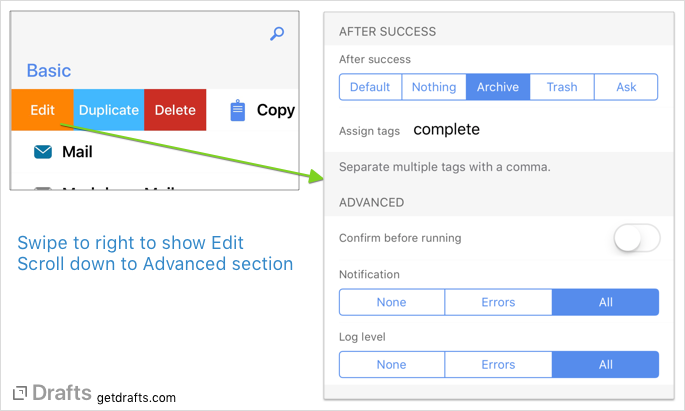

Configuring Actions
Table of Contents
Actions Basics
Much of the power for Drafts resides in actions. Actions are can be used to export to other apps and services, to send messages and email – but also for simple things like inserting manipulating text in the editor.
An action consists of one or more action steps which do the actual work of the action, but also has basic configuration options and settings covered in this article.
To edit an action, swipe to the right on an action in the action list and select “Edit”.
 

Settings
- Identification
- In the identification section, the action name can be assigned as well as an icon (tap icon to select) and tint color. Use the “X” in the color row, which will use the default tint color for the current theme.
- Steps
- Displays count of action steps in the group. Tap to view and modify action steps. See action steps for more information about available steps
- Description
- Optional description of the action. Especially helpful when sharing actions to help others understand how they are intended to function.
- Keyboard Appearance
- Key label: When this action is shown as a key in the extended keyboard, use this text instead of the action name. Useful for providing an abbreviated label that fits in the keyboard better.
- Show icon: If enabled, the action icon will also be displayed in the keyboard row.
- External Keyboard Shortcut
- Optionally assign a keyboard shortcut which can be used to trigger this action from an external keyboard attached to your device.
- Advanced
- See the advanced settings article for more details on these settings.
Advanced Settings
The action edit screen contains a number of advanced configuration options that affect how the action is run.

Confirm before running
While Drafts is geared around making it quick and frictionless to act on drafts, there are sometimes actions that publish text, or update or overwrite files, etc., which you might not want to accidentally trigger with an errant tap.
If “Confirm before running” is enabled, whenever the action is run, a prompt will open to confirm you wish to run the action, with the option to cancel.
After Success - Filing
After the successful completion of an action, drafts can be filed away automatically using the “After success” setting.
After Success can be set on individual actions in their action edit view, or use a default set on the Action Group the action reside in. The default value on an action is “Default”, which will inherit the setting from the Action Group. The options are as follows:
- Default: Use the “After success” setting configured for the Action Group.
- Nothing: After success, do not do anything with the draft. This is common for actions used as keyboard keys, or which modify some text in the current draft.
- Archive: After the action is successful, file the draft in the archive.
- Trash: After success, move the draft to the trash can.
If the after success is set to archive or trash the draft, and that draft is currently loaded in the editor, Drafts will also end editing of that draft. If focus mode is current enabled, the next draft in the draft list will be loaded. If focus mode is off, you will be returned to a new draft, ready to edit.
After Success - Tagging
The after success settings on an action can also assign one or more tags to the draft. Place a comma-separated list of tags in the “Assign tags” field, and those tags will be assigned to the draft when the action completes successfully. This is a great way to file drafts - for example, assigning a “tweet” tag to any drafts that were posted to Twitter with an action.
Notification
The notification setting determines whether Drafts will show a banner and confirmation sounds after running the action. The options are:
- None: Do not show a banner or play notification sounds after the action. Typically used for actions (like keys which insert text) that require no confirmation.
- Errors: Only show notifications if an error occurs running the action.
- All: Always show completion confirmation, regardless of success or failure.
Log Level
Actions generate logs of the actions execution which provide useful records of what actions have been performed on a draft, and what (if any) error occurred. These logs are available in the draft detail (i) view. Depending on the type of action, it may make sense not to log the execution of the action. For example, you might not need to know a history of each time you copied the draft to clipboard, or inserted a bold text markup with an action key.
- None: Do not save logs of this action’s execution.
- Errors: Only log if an error occurs running the action.
- All: Always log completion confirmation, regardless of success or failure.